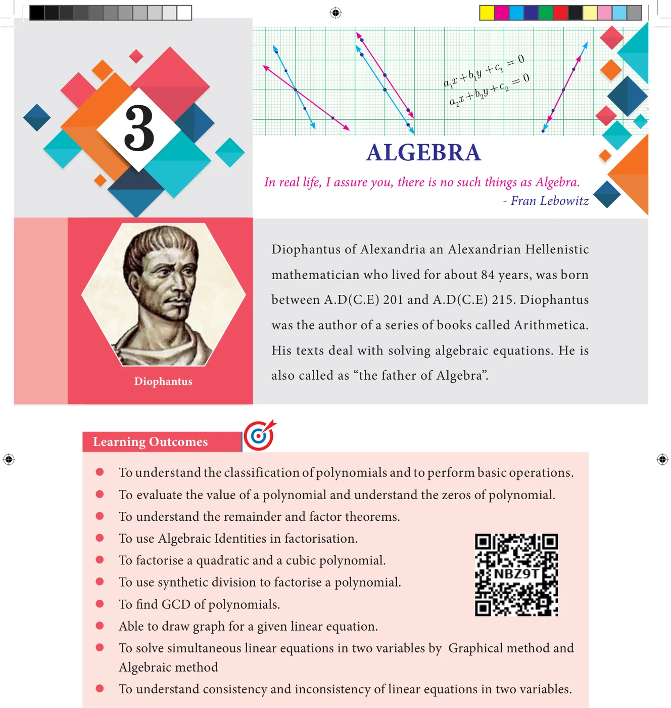
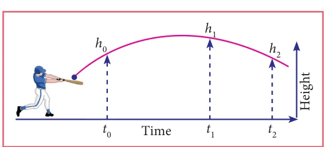
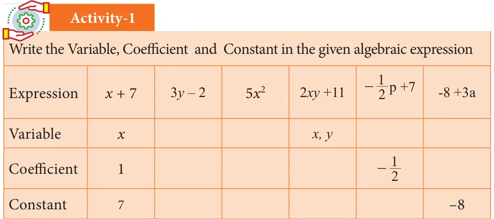

3.1 Introduction
Why study polynomials?
This chapter is going to be all about polynomial expressions in Algebra. These are your friends, you have already met, without being properly introduced! We will properly introduce them to you, and they are going to be your friends in whatever mathematical journey you undertake from here on.
\((a+1)^{2} = a^{2} + 2a + 1\)
Now that's a polynomial. That does not look very special, does it? We have seen lots of algebraic expressions already, so why to bother about these? There are many reasons why polynomials are interesting and important in mathematics.
For now, we will just take one example showing their use. Remember, we studied lots of arithmetic and then came to algebra, thinking of variables as unknown numbers. Actually we can now get back to numbers and try to write them in the language of algebra.
Consider a number like 5418. It is actually 5 thousand 4 hundred and eighteen. Write it as:
\(5 \times 1000 + 4 \times 100 + 1 \times 10 + 8\)
which again can be written as:
\(5 \times 10^{3} + 4 \times 10^{2} + 1 \times 10^{1} + 8\)
Now it should be clear what this is about. This is of the form \(5x^{3} + 4x^{2} + x + 8\), which is a polynomial. How does writing in this form help? We always write numbers in decimal system, and hence always \(x = 10\). Then what is the fun? Remember divisibility rules? Recall that a number is divisible by 3 only if the sum of its digits is divisible by 3. Now notice that if \(x\) divided by 3 gives 1 as remainder, then it is the same for \(x^{2}\), \(x^{3}\), etc. They all give remainder 1 when divided by 3. So you get each digit multiplied by 1, added together, which is the sum of digits. If that is divisible by 3, so is the whole number. You can check that the rule for divisibility by 9, or even divisibility by 2 or 5, can be proved similarly with great ease. Our purpose is not to prove divisibility rules but to show that representing numbers as polynomials shows us many new number patterns. In fact, many objects of study, not just numbers, can be represented as polynomials and then we can learn many things about them.


In algebra we think of \(x^{2}\), \(5x^{2} - 3\), \(2x + 7\) etc., as functions of \(x\). We draw pictures to see how the function varies as \(x\) varies, and this is very helpful to understand the function. And now, it turns out that a good number of functions that we encounter in science, engineering, business studies, economics, and of course in mathematics, all can be approximated by polynomials, if not actually be represented as polynomials. In fact, approximating functions using polynomials is a fundamental theme in all of higher mathematics and a large number of people make a living, simply by working on this idea.
Polynomials are extensively used in biology, computer science, communication systems ... the list goes on. The given pictures (Fig. 3.1, 3.2 & 3.3) may be repsresented as a quadratic polynomial. We will not only learn what polynomials are but also how we can use them like in numbers, we add them, multiply them, divide one by another, etc.,

Observe the given figures.


The total area of the above 3 figures is \(4x^{2} + 2xy + y^{2}\), we call this expression as an algebraic expression. Here for different values of \(x\) and \(y\) we get different values of areas. Since the sides \(x\) and \(y\) can have different values, they are called variables. Thus, a variable is a symbol which can have various numerical values.
Variables are usually denoted by letters such as \(x, y, z\), etc. In the above algebraic expression the numbers 4, 2 are called constants. Hence the constant is a symbol, which has a fixed numeric value.
Constants
Any real number is a constant. We can form numerical expressions using constants and the four arithmetical operations.
Examples of constant are 1, 5, \(-32\), \(\frac{3}{7}\), \(-\sqrt{2}\), 8.432, 1000000 and so on.
Variables
The use of variables and constants together in expressions give us ways of representing a range of numbers, one for each value of the variable. For instance, we know the expression \(2\pi r\), it stands for the circumference of a circle of radius \(r\). As we vary \(r\), say, 1cm, 4cm, 9cm etc., we get larger and larger circles of circumference \(2\pi\), \(8\pi\), \(18\pi\) etc.
The single expression \(2\pi r\) is a short and compact description for the circumference of all these circles. We can use arithmetical operations to combine algebraic expressions and get a rich language of functions and numbers. Letters used for representing unknown real numbers called variables are \(x, y, a, b\) and so on.
Algebraic Expression
An algebraic expression is a combination of constants and variables combined together with the help of the four fundamental signs.
Examples of algebraic expression are
\(x^{3} - 4x^{2} + 8x - 1,\; 4xy^{2} + 3x^{2}y - \frac{5}{4}xy + 9,\; 5x^{2} - 7x + 6\)
Coefficients
Any part of a term that is multiplied by the variable of the term is called the coefficient of the remaining term.
For example,
\(x^{2} + 5x - 24\) is an algebraic expression containing three terms. The variable of this expression is \(x\), coefficient of \(x^{2}\) is 1, the coefficient of \(x\) is 5 and the constant is \(-24\) (not 24).
